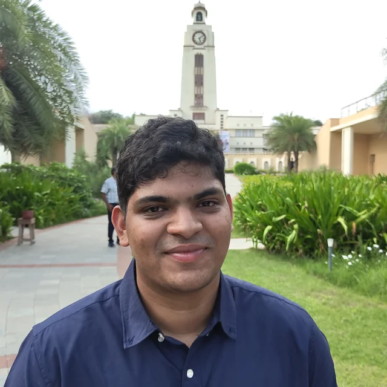
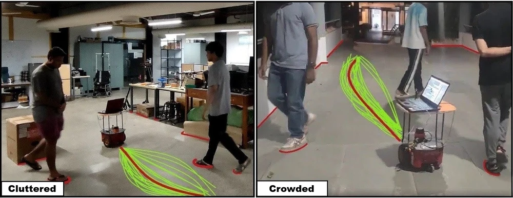
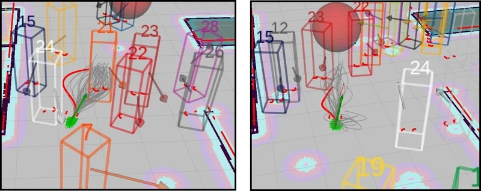
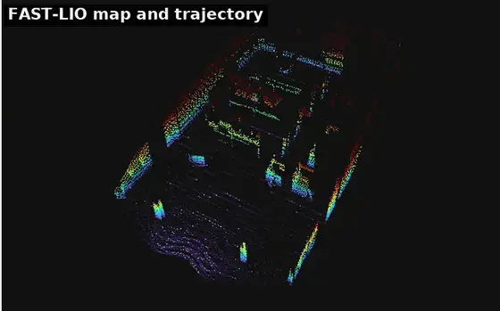
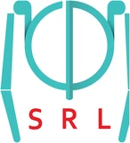
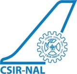
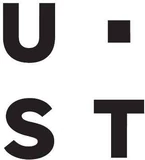
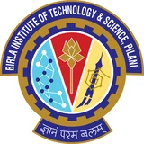

Mathai Mathew Pulicken
I'm Mathai, a Research Assistant at the Robotics Research Center at IIIT Hyderabad, advised by Prof. K. Madhava Krishna and, for my work on robotic manipulation, Prof. Sourav Garg.
I'm interested in how robots can make reliable decisions in unstructured, uncertain environments. My research currently centers on robotic manipulation, in particular vision-language-action models. Before this, I worked on crowd navigation, building learned planners that reason about risk and human behavior to stay safe and socially compliant around pedestrians.
Selected Publications
all publications →-
 arXiv preprint, 2026
arXiv preprint, 2026LiDAR-only crowd navigation that scores candidate trajectories by their predicted collision risk.
Efficient crowd navigation requires anticipating dynamic collision-free space without relying on fragile object tracking. We propose the Don't Risk It Planner (DRIP), an end-to-end LiDAR-only planning framework that couples occupancy forecasting with trajectory-conditioned clearance and uncertainty estimation. Operating directly on LiDAR-derived occupancy grid histories, DRIP predicts a distribution over minimum robot-obstacle clearance for candidate control sequences to evaluate collision risk. The model is trained using a risk cost that grounds predictive uncertainty directly in empirical collision outcomes rather than geometric regression alone. In closed-loop experiments with up to 45 pedestrians, DRIP achieves higher success rates with fewer collisions and reduced freezing behavior compared to state-of-the-art baselines.
-

IEEE International Conference on Robotics and Automation (ICRA), 2026Flow-matching trajectory generation with a learned human-likeness score for selecting among trajectories.
Safe and computationally efficient local planning for mobile robots in dense, unstructured human crowds remains a fundamental challenge. Moreover, ensuring that robot trajectories are similar to how a human moves will increase the acceptance of the robot in human environments. In this paper, we present Crowd-FM, a learning-based approach to address both safety and human-likeness challenges. Our approach has two novel components. First, we train a Conditional Flow-Matching (CFM) policy over a dataset of optimally controlled trajectories to learn a set of collision-free primitives that a robot can choose at any given scenario. The chosen optimal control solver can generate multi-modal collision-free trajectories, allowing the CFM policy to learn a diverse set of maneuvers. Secondly, we learn a score function over a dataset of human demonstration trajectories that provides a human-likeness score for the flow primitives. At inference time, computing the optimal trajectory requires selecting the one with the highest score.
-

ICRA 2026 Workshop on Bridging the Gap between Robot Learning and Human-Centered Robotics, 2026
Selected Projects
all projects →-

Livox Lidar Gazebo Simulation for ROS 2Livox Mid-360 and HAP lidar simulation for Gazebo Harmonic and ROS 2 Jazzy, with the real non-repetitive scan pattern, per-point timing and datasheet noise.
-
 Scout: A Custom Low-cost Quadruped Platform
Scout: A Custom Low-cost Quadruped PlatformA low-cost ROS 2 quadruped built on OpenQuadruped, with custom electronics and a custom RL-trained gait. Built from cheap parts, in the same price range as OpenQuadruped, and tested in Gazebo and on the real robot.
-
 RRT-based Exploration of Unknown Environments
RRT-based Exploration of Unknown EnvironmentsA ROS Noetic package that grows RRTs on the SLAM occupancy grid to find frontiers, clusters and filters them, and sends the best one to move_base. Runs on a TurtleBot3 with gmapping.
Experience
-
Research Assistant, Robotics Research Center, IIIT HyderabadMay 2025 – PresentSystem Administrator, Robotics Research Center, IIIT Hyderabad
-

Research Intern, Stochastic Robotics Lab, IIScDec 2024 – May 2025Worked on a model predictive controller (MPC) for walking control of a custom-built biped robot.
-

Research and Development Intern, CSIR-National Aerospace LaboratoriesJul 2024 – Dec 2024Design and development of a custom sensor suite for meteorological drones for weather sensing in remote areas.
-

Research Intern, UST Global Innovation LabsJun 2023 – Jul 2023Worked on localization and mapping using drones and AMR.
-
Head of Software Engineering, CRISS RoboticsFeb 2023 – Mar 2024
Previously Software Engineer (May 2022 – Feb 2023). Development and testing of the software stack on a model Mars rover and UAVs.
-

Study Project on Reinforcement Learning for Multicopters, BITS PilaniStudied PPO-based flight control and recovery for multicopters in AirSim, built a physical quadcopter for sim-to-real testing, and worked on reconfigurable drones.
Teaching
-
Instructor and Organizer, IIITH Robotics Summer School
Taught and mentored 40+ students during a 4-week intensive robotics onboarding program. Developed lectures, assignments and hands-on labs covering robotics fundamentals, and guided student projects involving ROS 2, motion planning, perception and manipulation.
-
Instructor, ROS 2 Introductory Class, BITS Pilani
Introduced 50+ first- and second-year students to ROS 2, covering the Robot Operating System, its middleware, simulation in Gazebo, and navigation with Nav2.